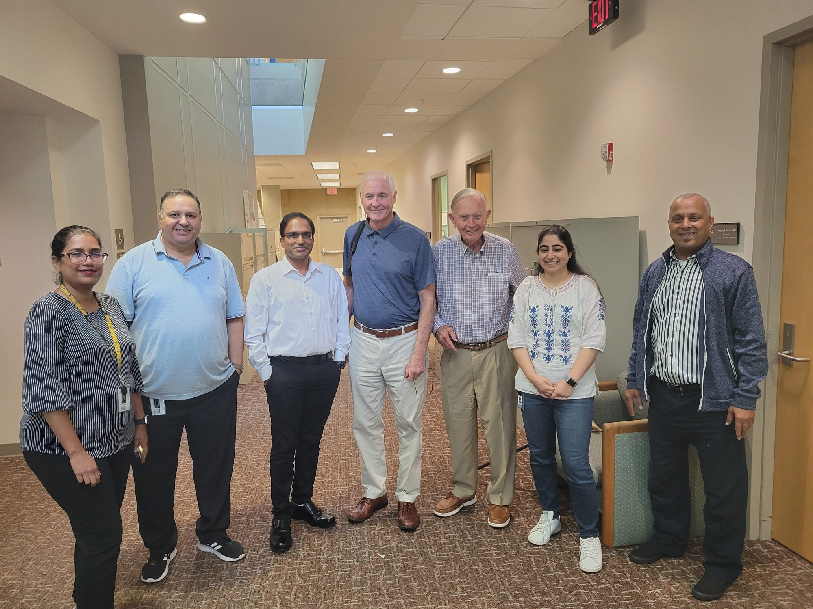
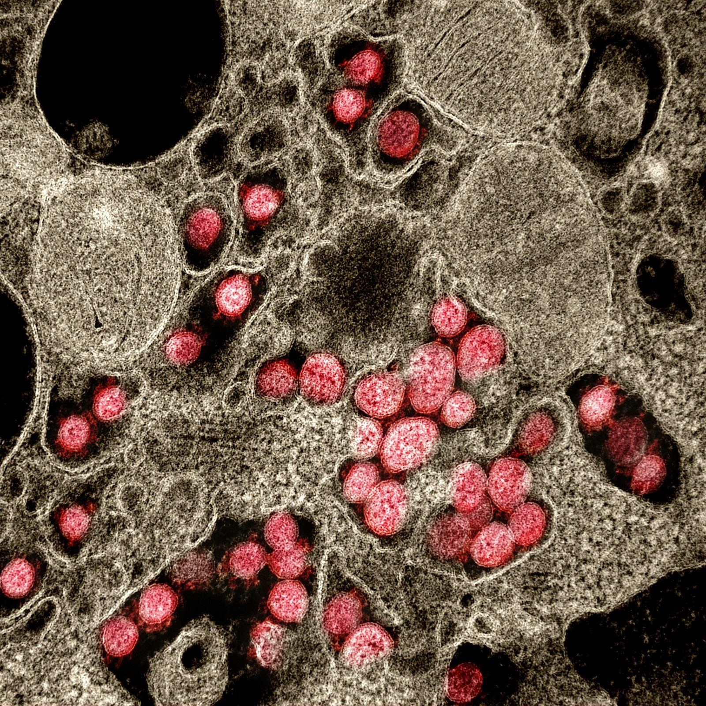
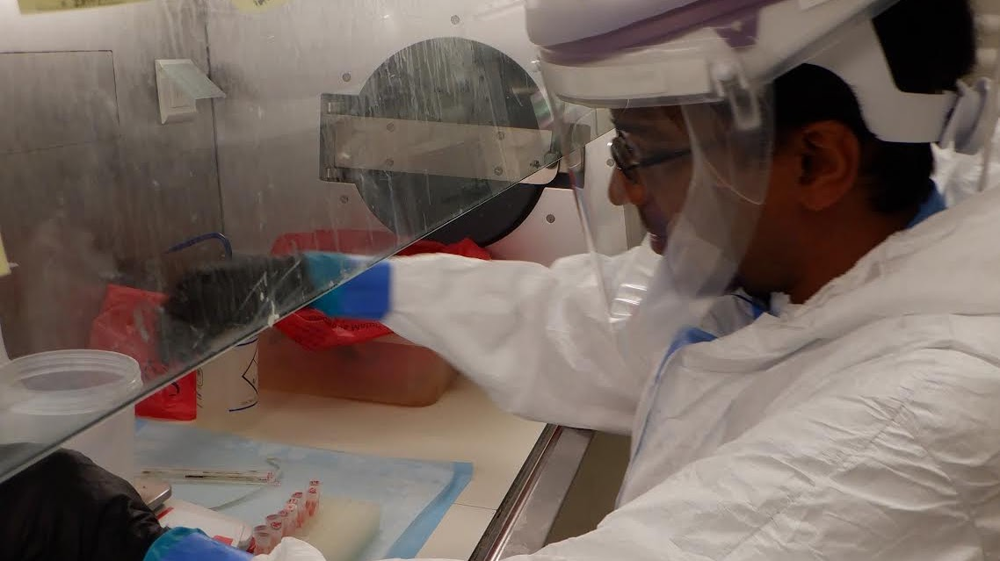
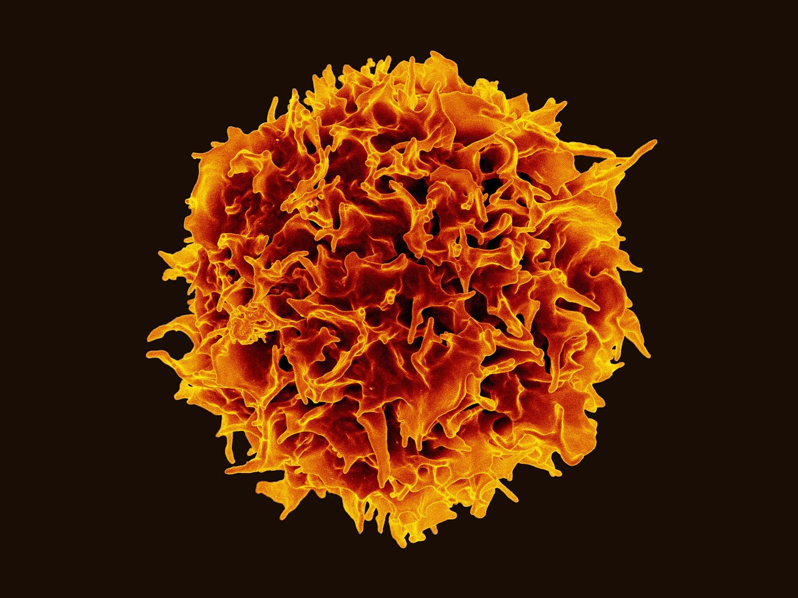
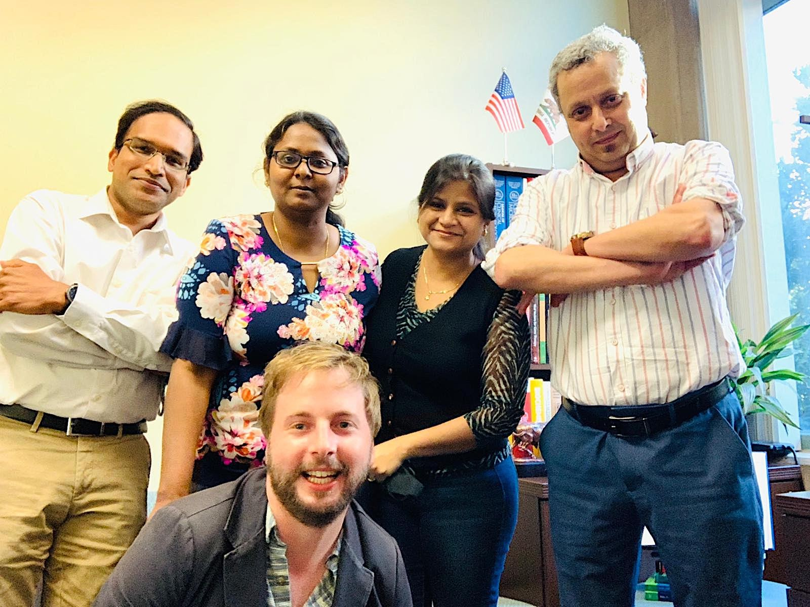

SwayamPrakash
MS, PhD, FACSc, FRSB. Assistant Researcher, School of Medicine, University of California, Irvine
Immunologist and vaccine scientist. I study which human immune responses separate protection from disease, and engineer them into vaccines and immunotherapies for emerging and persistent viral infections.
Download CV (PDF) ↓Protection, learned from people
- Appointment
- Assistant Researcher (Assistant Research Professor rank), Department of Ophthalmology
- Laboratory
- Cellular and Molecular Immunology Laboratory, Gavin Herbert Eye Institute
- Based in
- Irvine, California
- Training
- PhD, Sanjay Gandhi Postgraduate Institute of Medical Sciences, Lucknow
- AI training
- Master of Information and Data Science, UC Berkeley; MSc in Artificial Intelligence, Woolf (2026)
My research asks a practical question: why do some people control a virus without becoming ill, and can we build that response on purpose? At UC Irvine I helped identify conserved B-cell, CD4 and CD8 T-cell targets shared across human and animal coronaviruses, and advanced multi-epitope and multi-antigen pan-coronavirus vaccine candidates on mRNA-LNP, adenoviral, AAV and peptide platforms.
In herpes simplex infection I study tissue-resident memory T cells, mucosal chemokines and T-cell exhaustion, and the prime-pull-keep strategy for therapeutic vaccination. This work rests on a decade of human immunogenetics (KIR, HLA and transplantation) and on single-cell and bulk transcriptomics, immunoinformatics and preclinical models from mice to HLA-transgenic rabbits.
I also bring hands-on histocompatibility experience in renal transplantation (HLA typing, antibody screening and crossmatching), and public-health research that spans field studies of chronic kidney disease of unknown etiology in India and 20 papers with the Global Burden of Disease Study.
In 2026 I completed graduate training in artificial intelligence and data science at UC Berkeley and Woolf (Udacity Institute of AI and Technology), with executive education at Harvard Business School. I use it to build interpretable models of protective immunity and to bring AI into vaccine design.

Appointments
- Assistant Researcher, UC Irvine2024 to date
- Associate Specialist, UC Irvine2023 to 2024
- Postdoctoral Fellow, UC Irvine2018 to 2023
- Research Associate, SGPGIMS Lucknow2015 to 2018
- Visiting Fellow, Histocompatibility, University Hospital Essen2016 to 2017
- Senior Research Fellow, SGPGIMS2014 to 2015
- Junior Research Fellow, SGPGIMS2012 to 2014
Honors and service
- Fellow, Royal Society of Biology2026
- Fellow, American Association of Clinical Scientists2026
- NIH reviewer, Vaccines Against Infectious Diseases2026
- PI, 20/20 Society Pilot Research Grant2025
- Elected full member, Sigma Xi2024
- Associate Editor, Frontiers in Microbiology and Frontiers in AgingCurrent
- Senior Research Fellowship, ICMR2014
A record across three fields
citations on Google Scholar, 42,298 of them since 2021.
h-index, with an i10-index of 56.
publications and preprints, 33 as first or co-first author.
undergraduate researchers supervised at UC Irvine, many now in medical and dental school.
Citation metrics from Google Scholar, October 2026; they include consortium papers of the Global Burden of Disease Study. Publication count combines the NCBI bibliography with journal articles not indexed in PubMed.
Seven lines of research
- vaccinesBroad respiratory-virus vaccines built from conserved, protective antigens
- tissue immunityTissue-resident memory T cells and prime-pull-keep immunotherapy
- immunogeneticsHLA, KIR, single-cell and interpretable multi-omic models
- transplantationHistocompatibility, KIR and HLA matching, and allograft outcomes in kidney transplantation
- one healthCKDu field genetics, Global Burden of Disease and zoonotic preparedness
- long covidPersistent SARS-CoV-2 reservoirs and exhausted antiviral lymphocytes
- herpesOcular and genital HSV latency, reactivation and therapeutic vaccines
The future laboratory, the Laboratory for Precision Antiviral Immunity and Vaccines, joins these lines into one engine: from protective human signatures to intervention, and back.
Read the research plan →From the bench to the clinic



Selected papers
First and co-first author articles, newest at the left. Each spine opens the paper.
Recognitionand service
| Year | Recognition or role | Body | Type |
|---|---|---|---|
| 2026 | Fellow (FRSB) | Royal Society of Biology | Fellowship |
| Fellow (FACSc) | American Association of Clinical Scientists | Fellowship | |
| Peer reviewer, Vaccines Against Infectious Diseases study section | National Institutes of Health | Review | |
| 2025 | HSV-1 latency-associated biomarker screening for recurrent ocular herpes | 20/20 Society Pilot Research Grant, Gavin Herbert Eye Institute | PI, funded |
| HLA typing and crossmatch strategies in renal transplantation | 54th Annual Conference, Indian Society of Nephrology | Invited talk | |
| 2024 | Elected full member | Sigma Xi, The Scientific Research Honor Society | Election |
| Conserved spike epitopes across five years of SARS-CoV-2 variants | Clinical and Translational Serology Task Force, Frederick National Laboratory, NCI | Invited talk | |
| Current | Associate Editor; Special Issue Editor | Frontiers in Microbiology, Frontiers in Aging, Vaccines | Editorial |
| Regional Representative, West Coast USA | International Society for Vaccines | Society | |
| International Committee Member | American Society for Histocompatibility and Immunogenetics | Society | |
| Institutional Biosafety Committee; MAQ Steering Committee | University of California, Irvine | Governance | |
| Reviewer of more than 150 manuscripts | Frontiers in Immunology, Gene, Heliyon, Int J Immunogenetics and others | Review | |
| 2021 | UCI scientists developing a more effective vaccine | NBC4 Los Angeles | Press |
| UC Irvine researchers working on a vaccine for all coronaviruses | Spectrum News 1 | Press | |
| UCI team's preemptive COVID vaccine candidate has promising results | Spectrum News 1 | Press | |

Teaching through evidence
Students learn biomedical science most deeply when they use evidence to make consequential decisions. My courses move through one cycle: build a minimal model, interrogate real data, design the next experiment, defend the decision, revise.
Proposed courses span advanced immunology and host-pathogen interactions, vaccines and immunotherapeutics, data-intensive immunology and experimental design, with a capstone Vaccine Design Studio.
Contact
For research collaborations, speaking invitations, and other enquiries, please write to me.